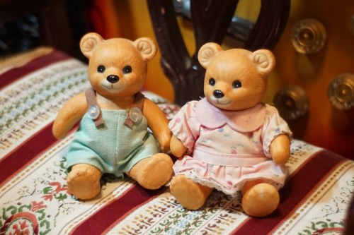

So much for not buying dolls! Check out the new box opening in the cafe! I made it 48 days into the new year before buying doll. No regrets!! Liam deserves it. Best boy!! Smoochies!

My mom came to visit so we did traditional thrift shopping. I enjoy it more than her other hobbies which include gnomes, youtube, and television craft supply shopping.
Would you even believe me if I said this was mine? You shouldn't.
Ryan's
Ryan and I did not consider it wasn't functional without a remote. Regretful purchase and I will be searching out a remote now.
Ryan's
Ryan's
somehow these don't pop up often and I've been looking for one
my mom's
Ryan's. I hope he will make sludge for me sometime!
I love it.
my mom's
It's very pretty. I wonder what went in it.
I wouldn't call it a deal but I did want one.
For Ryan. Happy birthday, Kurt!
I've been keeping my flowers in cups and searching for a lead crystal one, but I didn't even think violets were a possibility!
Heh.
For Ryan. I own 1 already but I wasn't willing to give it up.
The bonus CD is missing and was replaced with a burned DVD "White Castle". A little bit of a bummer.
Brand new. Ryan stole my american flag one that I use when travelling so I bought another.
My favorite cable was broken due to a trip (and luckily not my camera too), so I got this to replace it.
Here's the CD list. All were between $.99 and $1.38
Never heard of them.
Ryan already had it and I guess I didn't rip it! Oops!
Allegedly this CD went triple platinum in Australia. Never heard of it.
Probably a one hit wonder.
NO I DON't LIKE THEM "IRONICALLY"
I don't know any of their songs due to not listening to the radio. I wasn't super impressed with my first listen.
This album has a very cool case that I immediately broke when taking the disc out to check for scratches.
No idea what this is. He has a bit of a whiny voice.
Score!! Ryan found this one for me. Gimme Schrei next!! Wait why do I already recognize half this CD???
Ryan's. I keep asking him if it's good and he keeps saying he hasn't listened to it yet!
Ryan's
My mom picked out CDs too. She got the two Simply Red and The Carpenters pictured. There were about 6 more not pictured. She picked the ones I thought went straight to the trash. I gave her my Foreigner CD too since I wasn't into it more than one song.
My mom has a pair of these little bears in her house and she wouldn't let me steal them. I found these and she wanted them to match hers because she couldn't even remember she has the EXACT same ones.
Their clothes are very sun damaged but these little bears are irrestibly cute. They're strung but their elastic was long destroyed. Luckily, this kind of restringing is babby tier to me.
Seriously so cute. Next themed cafe I open will be bear themed. Back in the 90s, there was a doll and bear store in the mall of my hometown. How I wish I could have worked there!